Lecture 14
E21 Computer Engineering Fundamentals
October 22, 2026
Bisection Method
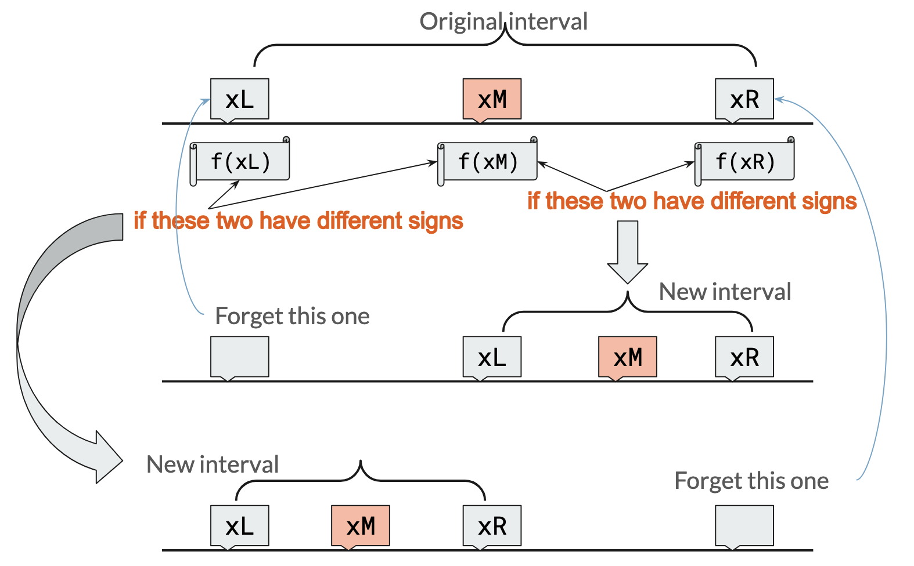
Convergence rates
At each subsequent bisection step, the bisection window is halved.


General approach to root-finding
In all root-finding approaches, we:
- start with a guess of where the root might be,
- work iteratively, repeatedly applying the same formula many times
- the number of iterations it takes to arrive at a solution is an important measure of how good an approach is.
- in practice, this is either a
whileorforloop.
- hopefully converge to one root.
The Secant Method
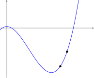
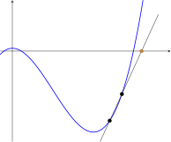
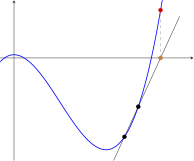
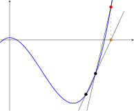
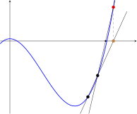
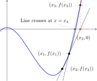
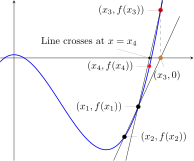
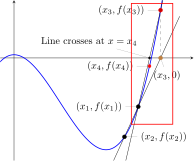
Secant Method — Zoomed in
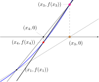
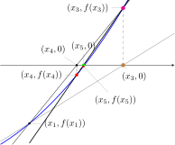
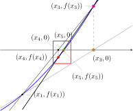
Secant Method — Zoomed in again
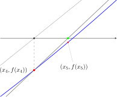
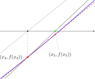
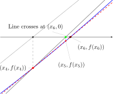
Summary of Secant Method
Start with two estimates of the root.
Evaluate the function at both \(x_1\) and \(x_2\)
Draw a straight line between the two points. This is an estimate of the function’s behavior.
Locate the point \((x_3,0)\) where this line crosses the x-axis. Call this \(x_3\).
Let \((x_3,f_3)\) be a new point. Forget about \((x_1,f_1)\).
Repeat the process above, using the points \((x_2,f_2)\) and \((x_3,f_3)\)
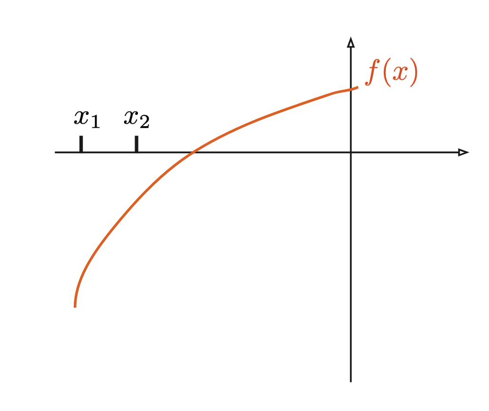
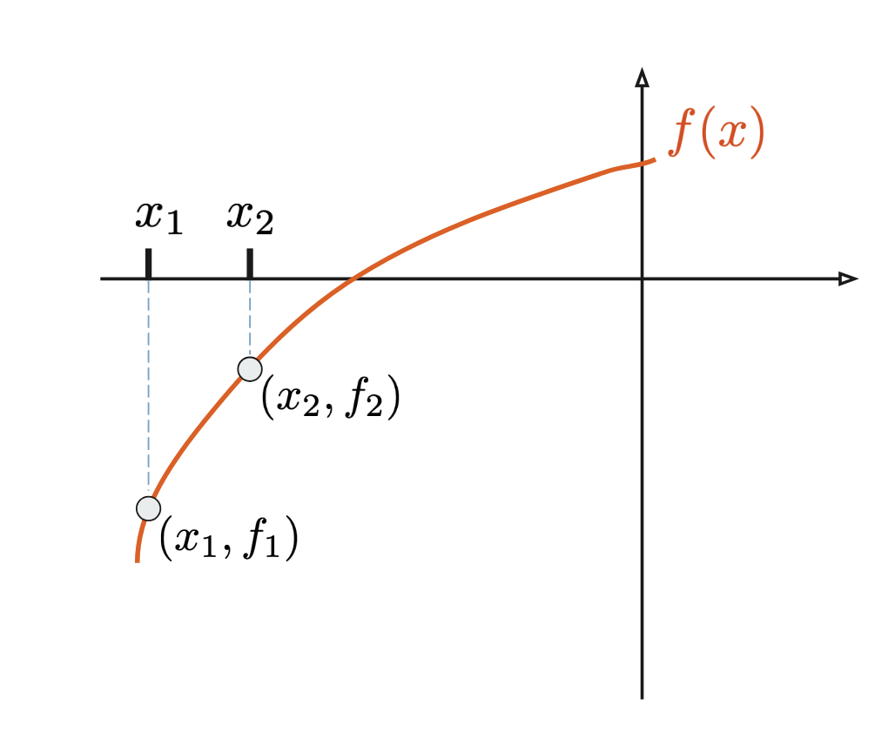
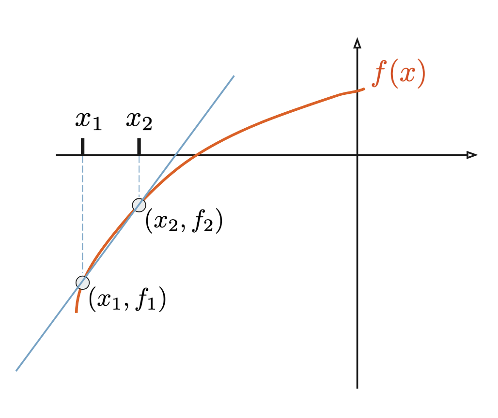
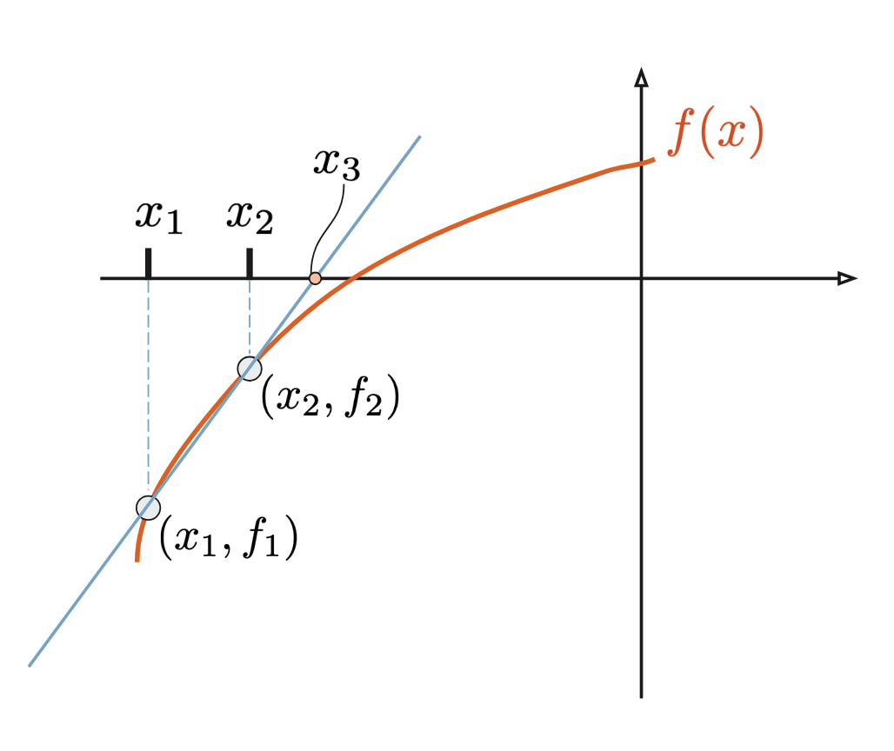
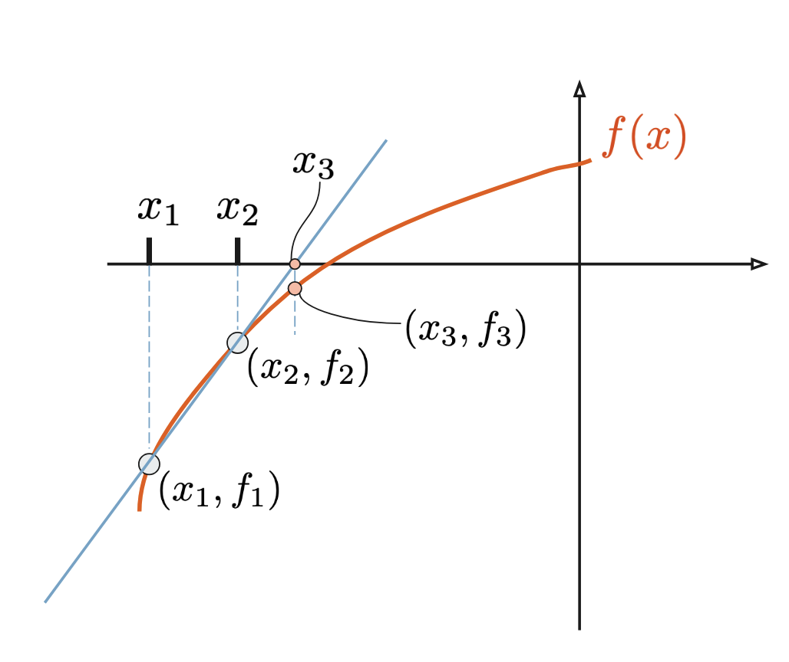
Writing a program for the Secant method
Newton’s Method
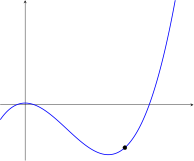
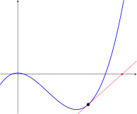
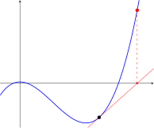
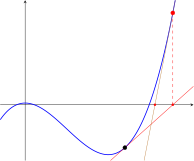
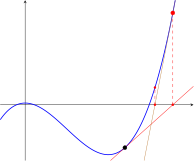
Summary of Newton’s Method
Evaluate the function at your first guess.
Make a straight line tangent to \((x_1,f_1)\)
Find location where this line intersects x-axis. This is the 2nd guess, call it \(x_2\).
Repeat.


Comparing Newton’s method with Secant method
- Newton’s method for finding roots of \(f(x)\) requires that you know \(f'(x)\) already.
- Secant method requires starting with two points instead of one.
- If two points very close to each other are chosen for the Secant method, the two methods are nearly identical
Equations for Newton’s method
Derive an equation for \(x_{n+1}\) given \(x_n\)
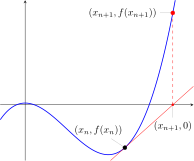
Writing a program for Newton’s method
Pitfalls of Root Finding
If a root-finding program does not find a solution, it could be because:
- the equation \(f(x)=0\) has no solution
- a solution exists but the program wasn’t able to find it
- a solution is found but it’s not the desired solution
- too many iterations are needed to arrive at the solution
A well-executed numerical method can solve problems 2-4 but cannot solve problem 1.
Example — Finding the wrong root
Suppose an equation is known to have multiple solutions, but only one of them is physically meaningful. A root-finding program will not necessarily find the solution we care about.
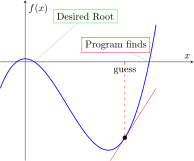
Example — Stuck in a flat place
In the neighborhood of zero-slope points, these methods run into problems.
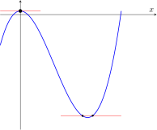
E21 • Fall 2026 • Lecture 14 • October 22, 2026 • ↩︎